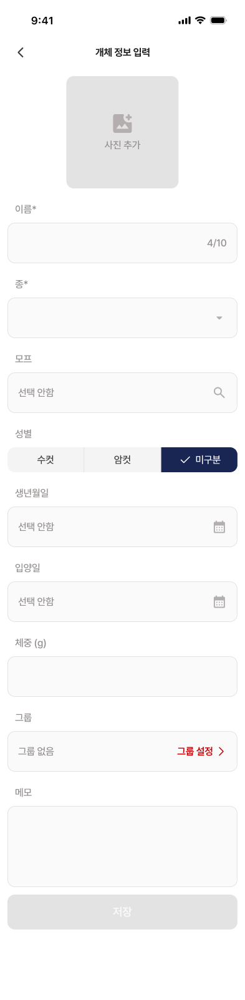
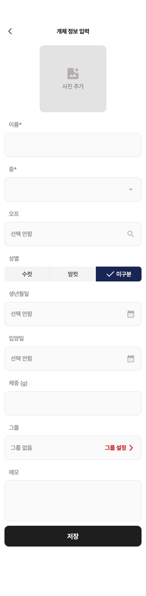
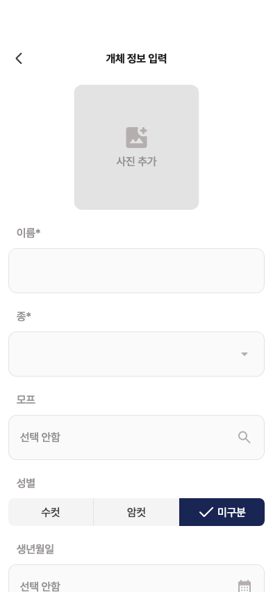
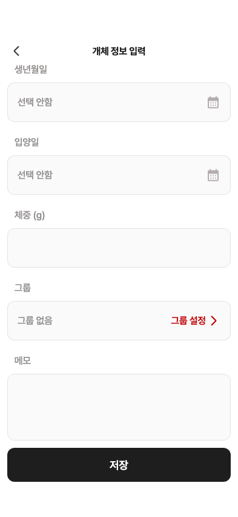

25 · 개체 정보 입력 — 초기 화면
24번 개체 관리 승인 기록 완료. 이번 화면은 수정 전 비교입니다.
수정 제안
① 빈 폼 저장 버튼: 활성 검정 → 비활성 회색
② 메모칸 높이110 →130pt · 저장 위치20pt 아래로
③ 뒤로가기 약6pt 오른쪽 · 그룹 설정 화살표24 →18pt
④ 카운터 오른쪽 여백 · 선택 글자/저장 글자 색상과 줄높이
사진·항목 간격·입력칸 배치는 맞습니다. 원본의4/10은 예시이며 앱은 빈 이름0/10을 유지합니다.
Figma 원본 · 393×1603
현재 제품 위젯 · 393×1603
휴대폰 크기 · 처음과 스크롤 끝
처음
스크롤 끝 · 저장 접근 가능
원본은 긴 폼 이미지입니다. 앱 버튼은 폼과 함께 스크롤하며, Figma의 프로토타입 고정 설정은 응답에서 확인되지 않았습니다. OS 상태바는 앱 위젯 캡처에 포함되지 않습니다.
수치·색상·버튼 구조 상세